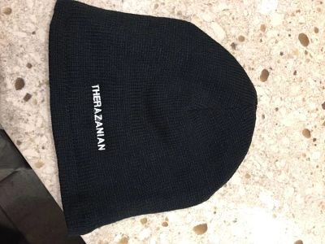
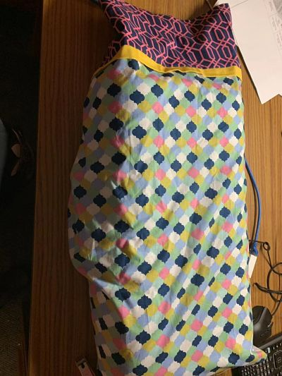

This week I made a pillow case and a hat with some words on it. The hat was very easy to make; however, I feel that I need a lot of practice with the sewing machine to make a perfect pillow case and etc. It is hard to sew in a straight line.  